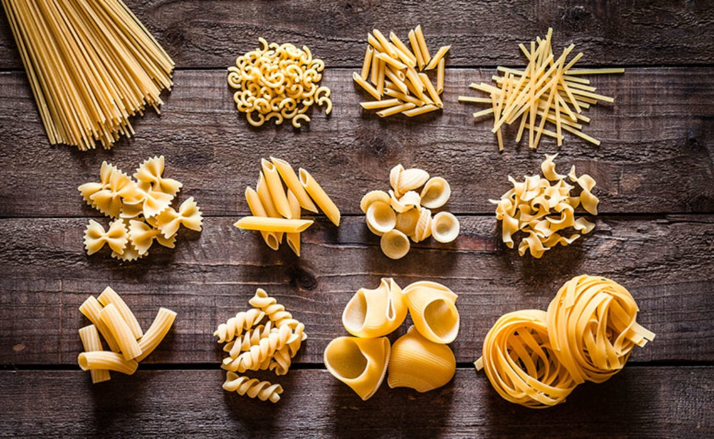
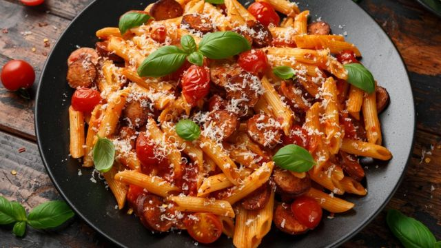

Macarronada

Tipos de macarrão

-NA ITÁLIA EXISTEM MAIS DE 500 TIPOS DIFERENTES DE MACARRÃO.
-O MAIOR CONSUMIDOR MUNDIAL DE MACARRÃO INSTÃNTANEO É A CHINA, QUE CONSOME 44,2 BILHÕES DE PORÇÕES POR ANO.

O Brasil é o terceiro maior produtor de macarrão em todo mundo.